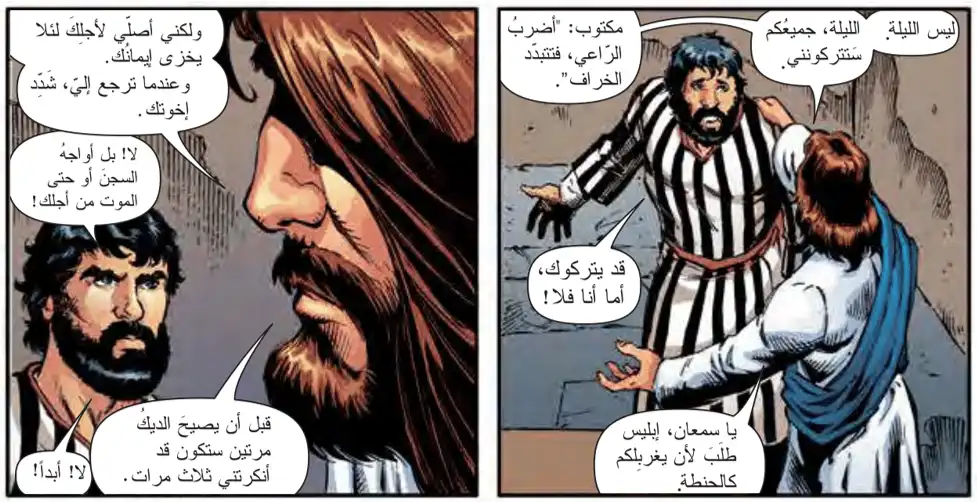
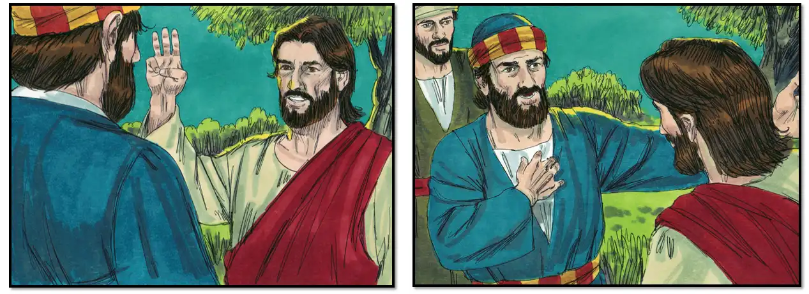
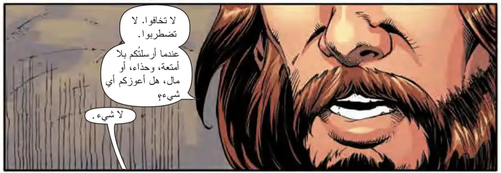
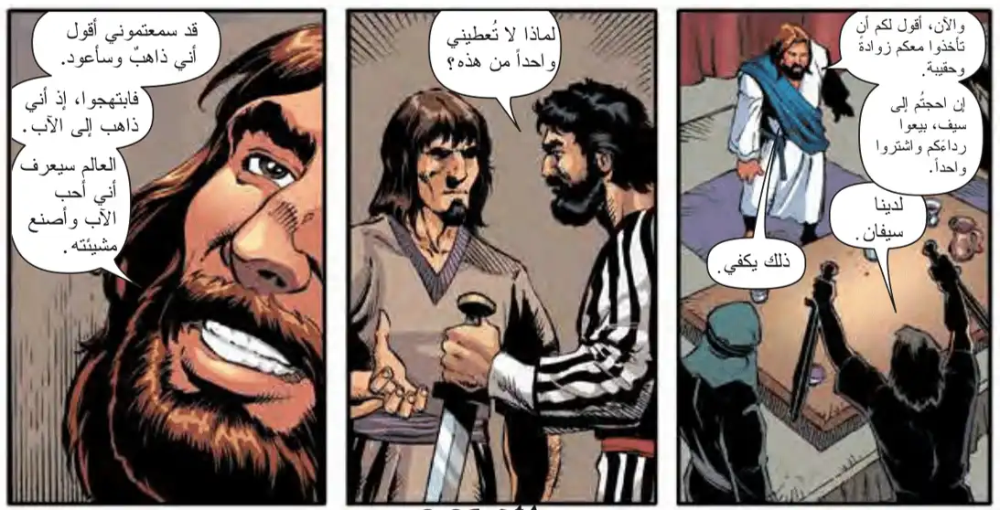

| الاناجيل عربى | الساعة الثالثة من ليلة الجمعة العظيمة |
| مِنْ مَزَامِيرِ أبِينَا دَاوُدَ النَّبِيِّ ( 108 : 1 ، 2 ) |
|
اللَّهُمَّ لَا تَسْكُتْ عن تَسْبِحَتي؛ لِأَنَّ فَمَ الخاطئ وَفَمَ الغَاشِّ قَدِ اِنْفَتَحا عَلَيَّ. وبِكَلَامِ بُغْضٍ أَحَاطُونِي، وَحَارَبُونِي مَجَّانًا. هَلِّلُويَا |
| مقدمة الإنجيل |
|
اللهم ترآءف علينا وارحمنا واجعلنا مستحقين لسماع إنجيلك المقدس فصل من بشارة الإنجيل لمعلمنا مار متى البشير بركاته علينا أمين. |
| مِنْ إِنْجِيلِ مُعَلِّمِنَا مَتَّى الْبَشِيرِ ( 26 : 30 - 35 ) |
|
ثُمَّ سَبَّحُوا وخَرَجُوا إِلَى جَبَلِ الزَّيْتُونِ. حينئذٍ قَالَ لَهُمْ يَسُوعُ: " كُلُّكُمْ تَشُكُّونَ فِيَّ فِي هَذِهِ اللَّيْلَةِ؛ لِأَنَّهُ مَكْتُوبٌ: إِنِّي أَضْرِبُ الرَّاعِيَ فَتَتَفَرَّقُ خِرَافُ الرَّعِيَّةِ. ومِنْ بَعد قِيَامَتي أَسْبِقُكُمْ إِلَى الجَلِيلِ".  فَأجَابَ بُطْرُسُ وقَالَ لَهُ: " إِنْ شَكَّ فِيكَ الجَمِيعُ فَأَنَا لَا أَشُكُّ ". قَالَ لَهُ يَسُوعُ: "الحَقَّ أَقُولُ لَكَ: إِنَّكَ فِي هَذِهِ اللَّيْلَةِ قَبْلَ أَنْ يَصِيحَ دِيكٌ تُنْكِرُنِي ثَلَاثَ مَرَّاتٍ".قَالَ لَهُ بُطرُسُ: "لو اضْطُرِرْتُ أَنْ أَمُوتَ مَعَكَ لنْ أُنكِرَكَ!" وَهَكَذَا قَالَ جَمِيعُ التَّلَامِيذِ أَيْضًا. ( وَالْمَجْدُ لِلَّهِ دَائِمًا ) |
| مقدمة الإنجيل |
|
اللهم ترآءف علينا وارحمنا واجعلنا مستحقين لسماع إنجيلك المقدس فصل من بشارة الإنجيل لمعلمنا مار مرقس البشير بركاته علينا أمين. |
| مِنْ إِنْجِيلِ مُعَلِّمِنَا مَرْقُسَ الْبَشِيرِ ( 14 : 26 - 31 ) |
|
ثُمَّ سَبَّحُوا وخَرَجُوا إِلَى جَبَلِ الزَّيْتُونِ. فَقَالَ لَهُمْ يَسُوعُ:
"إِنَّكُمْ جَميعُكُمْ تَشُكُّونَ فِيَّ فِي هَذِهِ اللَّيْلَةِ؛ لِأَنَّهُ مَكْتُوبٌ: إِنِّي أَضْرِبُ الرَّاعِيَ فَتَتَفَرَّقُ الخِرَافُ. ولَكِنْ بَعْدَ قِيَامَتِي أَسْبِقُكُمْ إِلَى الجَلِيلِ".
 فَقَالَ لَهُ بُطْرُسُ: "
إِنْ شَكَّ فِيكَ الجَمِيعُ فَأَنَا لَا أَشُكُّ ".
فَقَالَ لَهُ يَسُوعُ:
"الحَقَّ أَقُولُ لَكَ: إِنَّكَ اليَوْمَ فِي هَذِهِ اللَّيْلَةِ، قَبْلَ أَنْ يَصِيحَ دِيكٌ مَرَّتَيْنِ، تُنْكِرُنِي ثَلَاثَ مَرَّاتٍ".
أَمَّا هُوَ فقالَ بإفراطٍ:
"لو اضْطُرِرْتُ أَنْ أَمُوتَ مَعَكَ فَلنْ أُنْكِرَكَ!"
وَهَكَذَا أَيْضًا كانوا يقولون جَميعًا.
( وَالْمَجْدُ لِلَّهِ دَائِمًا ) |
| مقدمة الإنجيل |
|
اللهم ترآءف علينا وارحمنا واجعلنا مستحقين لسماع إنجيلك المقدس فصل من بشارة الإنجيل لمعلمنا مار لوقا البشير بركاته علينا أمين. |
| مِنْ إِنْجِيلِ مُعَلِّمِنَا لُوقَا الْبَشِيرِ ( 22 : 31 - 39 ) |
|
سِمْعَانُ سِمْعَانُ، هُوَذَا الشَّيْطَانُ قَدْ طَلَبَكُمْ لِكَيْ يُغَرْبِلَكُمْ كالحِنْطَةِ! ولَكِنِّي طَلَبْتُ عنكَ لِكَي لَا يَفْنَى إيمَانُكَ. وَأَنْتَ أَيْضًا مَتى رَجَعْتَ فثَبِّتْ إخْوَتَكَ زمانًا". أَمَّا هُوَ فَقَالَ لَهُ: " يَا رَبُّ، إِنِّي مُسْتَعِدٌّ أَنْ أمْضيَ مَعَكَ إِلَى السِّجْنِ وَإِلَى المَوتِ". فَقَالَ لَهُ: "أَقُولُ لَكَ يا بُطْرُسُ: لنْ يَصِيحَ ديكٌ اليومَ حتى تُنكِرَنِي ثَلاثَ مَرَّاتٍ لِتَعْلَمَ".  ثُمَّ قَالَ لَهُمْ: "لَمَّا أَرْسَلتُكُمْ بِغَيْرِ كِيسٍ وَلَا مِزْودٍ وَلَا حِذاءٍ، هَلِ احتجتُم إِلَى شَيءٍ؟ " أَمَّا هُمْ فَقَالوا له: " لَا "  . فَقَالَ لَهُمْ: "لَكِنِ الآنَ، مَنْ لَهُ كِيسٌ فَلْيَأخُذْهُ ومِزْوَدٌ كَذَلِكَ. ومَنْ لَيْسَ لَهُ فَلْيَبِعْ ثَوْبَهُ وليَشْتَرِ سَيْفًا؛ لِأَنِّي أقُولُ لَكُمْ: إِنَّهُ يَنْبَغِي أَنْ يَتِمَّ فِيَّ المَكْتُوبُ: وَأَحْصَوْهُ مع الأثَمَةِ؛ لِأَنَّ مَا كُتِبَ مِنْ أجلي لَهُ تمامُه " . فَقَالوا: " يَا رَبُّ، هَهُنا سيفانِ " . فَقَالَ لَهُمْ: "يَكْفِي!". وخَرَجَ ومَضَى كالعَادَةِ إِلَى جَبَلِ الزَّيْتُونِ، وَتَبِعَهُ التلَاميذُ أَيْضًا. ( وَالْمَجْدُ لِلَّهِ دَائِمًا ) |
| مقدمة الإنجيل |
|
اللهم ترآءف علينا وارحمنا واجعلنا مستحقين لسماع إنجيلك المقدس فصل من بشارة الإنجيل لمعلمنا مار يوحنا البشير بركاته علينا أمين. |
| مِنْ إِنْجِيلِ مُعَلِّمِنَا يُوحَنَّا الْبَشِيرِ ( 18 : 1 ، 2 ) |
|
قَالَ يَسوعُ هَذَا وخَرَجَ مَعَ تَلَامِيذِهِ إِلَى عَبْرِ وادي الأَرْزِ، حَيْثُ كَانَ بُسْتَانٌ فَدَخَلَهُ يَسُوعُ مع تَلَامِيذِهِ. ويَهُوذا الَّذِي كَانَ مُزْمِعًا أَنْ يُسلِّمهُ كَانَ يَعْرِفُ أَيْضًا ذَلِكَ الموضعَ؛ لِأَنَّ يَسُوعَ اجْتَمَعَ هُنَاكَ مِرَارًا كَثِيرَةً مَعَ تَلَامِيذِهِ. ( وَالْمَجْدُ لِلَّهِ دَائِمًا ) |